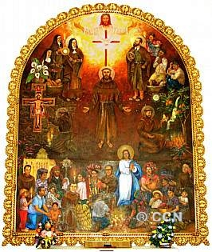
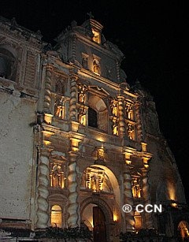
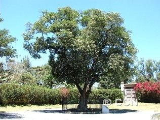

La fachada de la Iglesia tiene dos campanarios bajos, ocho grandes columnas salomónicas con diseños ornamentales tallados en estuco y el escudo de esa Orden religiosa. En las hornacinas, se observan las imágenes de santos mercedarios; de San Pedro Nolasco, fundador de la Orden; y de Nuestra Señora de la Merced. En 1687, el Ayuntamiento de la ciudad les otorgó un terreno en una calle que colindaba con la parte de atrás de la iglesia. En la actualidad, esa área es el final de la Calle del Arco. Como consecuencia del terremoto ocurrido en 1773, esta Iglesia y Convento sufrieron daños considerables.
En la actualidad, la Iglesia se encuentra reconstruida y es muy visitada por los feligreses para venerar a la imagen de Nuestra Señora de la Merced, patrona de la ciudad, y a la imagen de Jesús Nazareno.

El 3 de abril de 2004, el Consejo Municipal de La Antigua Guatemala proclamó a Jesús Nazareno de la Merced como Protector e Intercesor de los Antigüeños.

Cada año, en Semana Santa, se prepara un huerto y una alfombra de aserrín de colores frente a la capilla de Jesús de Nazareno


Actualmente, el Convento de la Merced se encuentra en ruinas. En el interior del claustro principal de ese Convento se encuentra una fuente, con diseño octagonal, que es considerada como la de mayor tamaño en Hispanoamérica.
En esa fachada se pueden apreciar esculturas representando a los doce apóstoles y cuatro padres de la iglesia. En la hornacina central, se observan dos esculturas que representan las imágenes de:
La Catedral fue uno de los templos de mayor importancia en Hispanoamérica en el tiempo colonia. En los capiteles de los pilares y en las cornisas del edificio se pueden apreciar finas decoraciones con estuco; sobresaliendo los escudos ubicados en los domos y en las ventanas. Al norte de Catedral está el Palacio Arzobispal, construido entre 1706 y 1711, el cual sólo conserva la puerta de ingreso y los marcos de piedra de las puertas de la fachada oeste, con sus escudos de armas. Originalmente, la edificación tenía dos niveles y una galera que daba sobre la plaza.
De la Iglesia Catedral, el jueves de la Octava de la festividad del Hábeas Christi, salía una solemne procesión del Santísimo Sacramento que hacía su recorrido por calles de la ciudad. En ese día, adornada a todo esmero, y concurrida con numerosas personas, la procesión era acompañada por el Hermano Pedro, quien hacía de su capa una bandera que levantaba en un astil de madera. Delante de la custodia iba agitando incesantemente esa bandera por todo el tiempo que duraba la procesión, acompañando el compás de sus brazos y el movimiento de sus pies con alegres saltos. Al mismo tiempo, iba cantando algunas coplas que él mismo había compuesto al misterio.
El origen de esa celebración se remonta hacia el Siglo XIII, y se trata de una festividad religiosa que nace como prolongación del Jueves Santo. En la localidad de Bolsena, Italia, se produjo un milagro cuando un sacerdote que celebraba la misa dudó que la Consagración fuera algo real. Al momento de partir la Hostia vio salir sangre de ella.
El Papa Urbano IV, conmovido por el prodigio y a petición de varios Obispos, fijó la festividad de la Solemnidad del Santísimo Cuerpo de Jesucristo, para toda la Iglesia, el jueves después de la Octava de Pentecostés. Actualmente, esta celebración religiosa es conocida como el Corpus Christi.
La Iglesia Catedral sufrió daños considerables por el terremoto ocurrido en 1773. En virtud de ello, las imágenes religiosas del recinto fueron resguardadas en la Iglesia de San José que había tenido menos daños como consecuencia de esa devastación telúrica. Al concluirse la restauración parcial de la Iglesia Catedral, aquellas imágenes religiosas que habían sido trasladadas regresaron a su anterior morada. En reconocimiento y agradecimiento a la divinidad, esta última empezó a nombrarse Parroquia de San José Catedral; mientras que las ruinas de la original Iglesia de San José son conocidas actualmente como ruinas de la Iglesia de San José El Viejo. La Parroquia de San José Catedral es muy visitada por los fieles devotos.
Luego de la muerte del Hermano Pedro, el señor Obispo decidió que el cuerpo se velara en la Iglesia del Oratorio de la Escuela de Cristo, la noche del 25 de abril de 1667, antes del solemne funeral y entierro en la bóveda de sepultura común de los religiosos de la Tercera Orden Franciscana, en el Templo de San Francisco El Grande. Con motivo de los trabajos de reconstrucción y reparación del mismo Templo, los restos mortales del Hermano Pedro se trasladaron a diferentes capillas en los años 1686, 1692 y 1817.
El Templo y el Convento sufrieron daños considerables por el terremoto ocurrido en 1773. La fachada del Templo está flanqueada de dos torres más bajas que la cúspide. La torre del norte es de las campanas, y la del sur era del reloj, pero fue derribada por el terremoto de 1773. En la actualidad, el Templo se encuentra parcialmente reconstruido y es el lugar que más visitan los fieles devotos. El Convento se encuentra en ruinas.
La reconstrucción del Templo de San Francisco El Grande se realizó de 1932 a 1970. Durante ese tiempo, la imagen de Jesús Nazareno del Perdón permaneció en la Capilla de la Tercera Orden en el Templo Nuestra Señora de los Remedios. El acceso al amplio atrio de este Templo puede hacerse por el Portal de San Buenaventura, al norte; o por el Portal de San Francisco, al poniente.
El 28 de octubre de 1990, después del último reconocimiento canónico, los restos mortales del Hermano Pedro fueron colocados en un sepulcro especial construido en la Capilla de la Vera Cruz, en el Templo de San Francisco. El Hermano Pedro fue Canonizado por Su Santidad el Papa Juan Pablo II, el 30 de julio de 2002.
La presencia de los restos mortales del Santo Hermano Pedro es la razón por la que el señor Arzobispo de Guatemala, Su Excelencia Monseñor Rodolfo Quezada Toruño, el 30 de julio de 2003, elevó el Templo de San Francisco a Santuario Arquidiocesano.
En la actualidad, el Templo de San Francisco, Santuario del Santo Hermano Pedro, es el lugar en el que convergen
devotos peregrinos, de diferentes culturas e idiomas, para visitar el Sepulcro en el que se encuentran los santos restos del Hermano Pedro.
En el Santuario se observa un gran fervor religioso en la veneración del Santo Hermano Pedro, ya que los fieles creyentes lo visitan tocando su sepulcro como para avisar su presencia y contarle sus penas y alegrías, para pedirle ayuda material y espiritual, y para agradecerle los milagros obtenidos, colocándole velas de diferentes colores que representan una petición especial dependiendo de las necesidades de la persona.
El Sepulcro del Santo Hermano Pedro tiene tres tallados en madera que representan: El Hospital de Belén
y las limosnas del Santo Hermano Pedro; El Santo Hermano Pedro yacente venerado por el pueblo; y el Santo Hermano Pedro
difunde el Nacimiento de Jesús.
En este Templo se pueden apreciar varios retablos de gran valor y devoción, entre los que pueden mencionarse: San Francisco, Cristo de las Ánimas, la Divina Pastora, y Nuestra Señora de Guadalupe.
También, se encuentra el Mural de San Francisco, en donde se representa a frailes franciscanos, religiosas, y al Hermano Pedro, observando la divinidad del Señor; en el centro, se representa a San Francisco, quien muestra sus estigmas; y a los feligreses reunidos en veneración.
La Capilla de la Concepción, construida en 1700, se encuentra actualmente en ruinas y sólo
quedan los arcos principales del presbiterio y la fachada. Con motivo de la Canonización del Beato Hermano
Pedro, esa área ha sido transformada en el Jardín del Santo Hermano Pedro, donde actualmente se encuentra
una escultura en bronce fundido.
A la par de la torre de las campanas del Templo, se reacondicionó
un jardín en el que se colocó una Cruz que sostiene figuras que representan los instrumentos
de la Pasión de Jesús.

Ingresando por la puerta situada en las ruinas de la torre sur del mismo Templo, se puede visitar la Biblioteca, las ruinas o el Museo del Santo Hermano Pedro.
La Biblioteca del Templo de San Francisco, Santuario del Santo Hermano Pedro, fue restaurada e inaugurada el 5 de diciembre de 2004, gracias a la cooperación del Gobierno de las Islas Canarias, de los frailes de Alemania y otros bienhechores; ofreciendo para su consulta bibliografía sobre Guatemala, La Antigua Guatemala, el Santo Hermano Pedro, la fe cristiana y otros documentos.
En el atrio del Templo de San Francisco, Santuario del Santo Hermano Pedro, se encuentra la 'Tienda del Santo Hermano Pedro' en la que se pueden adquirir diversos recuerdos o souvenirs religiosos tales como libros, estampas, imágenes, medallas, crucifijos, rosarios, llaveros, cuadros, réplicas de la campanita del Santo Hermano Pedro, y otros.
Asimismo, en el atrio de este Templo, se ubican pequeñas tiendas en las que se pueden adquirir diversas artesanías en textiles típicos y en madera o jade, medallas, rosarios elaborados con semillas o madera, y otros, así como veladoras de diferentes colores
La veneración popular por el Hermano Pedro fue desbordante. Fue necesario tomar serias medidas para poner orden al entusiasmo de las personas, ya que todos querían llevarse una reliquia, un trozo de sus vestiduras, incluso, sus cabellos. Llegaron también las autoridades de la ciudad y el Obispo con su Cabildo. Viendo que todos se arrodillaban ante el cadáver, el Obispo dijo cordialmente: "disculpen las formalidades y alaben a Dios en su humilde siervo. Forme cada uno en su interior el concepto que le dicte su vida ejemplar, que yo por mi parte lo tengo por varón grande, digno de toda reverencia."
Con su ejemplo, motivó a las demás personas a un profundo sentimiento
de veneración por el Hermano Pedro, rezándole desde ese momento, como a un verdadero santo.
En 1689, se constituyó la Congregación de San Felipe Neri. Aquí existió
un Oratorio que impartía educación religiosa a niños hasta su adolescencia.Este Templo sufrió daños
por el terremoto ocurrido en 1773. En la actualidad
se encuentra parcialmente reconstruido y es muy visitado por los feligreses. En 1805, o años
antes, la sede de la Parroquia de Nuestra Señora de los Remedios fue trasladada a la Escuela
de Cristo.
Asimismo, en esa vía se reconocieron las Estaciones del Vía Crucis,
señalándolas inicialmente con pequeñas cruces, luego con mantas y finalmente con la
construcción de capillas; llamándose en aquella época Calle de la Amargura, ahora
Calle de los Pasos.
En la Calle de los Pasos se encuentran las capillas que
representan de la II a la VIII Estación del Vía Crucis. En la actualidad,
esa Calle se ubica hasta el inicio del bulevar de doble vía conocido como
'Alameda del Calvario', en donde se localizan las capillas que representan
la IX y la X Estación del Vía Crucis.
La vía de la izquierda, al dirigirse hacia la Ermita
del Santo Calvario, no es utilizada para el tráfico vehicular, ya que allí se
encuentra instalada una fuente del tiempo colonial que, en la actualidad,
es decorativa.
Esas capillas, que representan de la II a la XI Estación del Vía
Crucis, conservan en su interior pinturas, realizadas en la época colonial, representando
cada una de ellas la Pasión de Jesús. Para preservar las valiosas pinturas, estas
capillas permanecen cerradas todos los días del año, excepto en Semana Santa (Viernes Santo)
y cuando se celebran Vía Crucis Eucarísticos, tiempo en el que dichas capillas son abiertas
y los feligreses pueden observar las pinturas.
La construcción de El Calvario fue lenta por la falta de recursos
económicos. En el año 1652, los religiosos de la Tercera Orden de San Francisco, entre ellos el
Hermano Pedro, recolectaron materiales y recaudaron limosnas para continuar la construcción.
Así lograron concluirla en 1655.
La imagen de Cristo Crucificado que
se encuentra en el Altar Mayor fue tallada en 1657, y es conocida
como el Cristo Crucificado del Hermano Pedro.
En el interior de esa imagen fueron encontrados dos documentos
que evidencian la fecha en que se terminó la talla de la misma y el nombre de su autor:
Los documentos originales se resguardan en el Consejo Nacional
para la Protección de la Antigua Guatemala.Copia de dichos documentos se encuentran
expuestos en la Ermita del Santo Calvario.
| Documento_1 | Texto Modernizado |
|---|---|
| ANVERSO | "Hizo esta Santa hechura de este crucifijo Pedro de la Rosa de la Tercera Orden de nuestro padre San Francisco, por mandado del padre comisario fray Hernando Espino; pagóme la hechura el regidor don Juan de Sabaleta, y la pintó y encarnó de limosna don Antonio Montúfar, acabé- |
| REVERSO | la hoy 8 de febrero de este año de mil seiscientos y 57
años, y se estrena Dios mediante este primer viernes de
dicho año; pido por amor de Dios a quién esto leyere me
encomiende a Dios y me oiga una misa"
Pedro de la Rosa |
| Documento_2 | Texto Modernizado |
|---|---|
| Siendo ministro de la Tercera Orden don Antonio de Estrada | "Laus Deo Estrenóse con la pintura del cuerpo de la iglesia de este santo Calvario; la santa imagen de Cristo del Sepulcro es también de mis indignas manos; ambas hechuras son propiedad de este santo Calvario siendo moradores de él los hermanos Pedro Betancur y don Pedro Ubierna" |
Con la presencia y animación del Hermano Pedro,
El Calvario se transformó en un centro de espiritualidad y devoción popular,
especialmente hacia María. En el Altar Mayor de la Ermita del Santo
Calvario se venera una imagen con la advocación de Virgen de Dolores.
El rostro de la imagen de ese crucifijo es
singular: Según se dice, fue tallado con los labios entreabiertos
para expresar Benevolencia por los fieles, quienes arrodillados
en oración, buscan a Dios.
En el jardín de esta Ermita se encuentra un árbol
de Esquisúchil sembrado por el Hermano Pedro el 19 de marzo de 1657.
Actualmente, es un frondoso árbol que aún continúa floreciendo tres veces en el año, y se le conoce como el Árbol del Hermano Pedro. Este Árbol fue sembrado en el mismo año en que se concluyó la burilación de la imagen conocida como el Cristo Crucificado del Hermano Pedro.

La Ermita del Santo Calvario sufrió daños considerables
por el terremoto ocurrido en 1773. En la actualidad se encuentra parcialmente
reconstruida y es muy visitada por los fieles devotos. Cada año, en Semana Santa, se prepara un huerto
y una alfombra de aserrín de colores frente a la Capilla de La Piedad